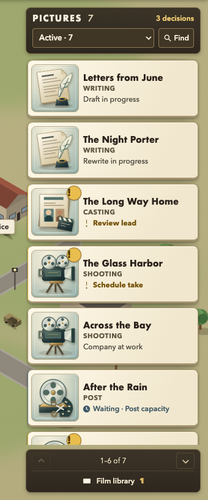
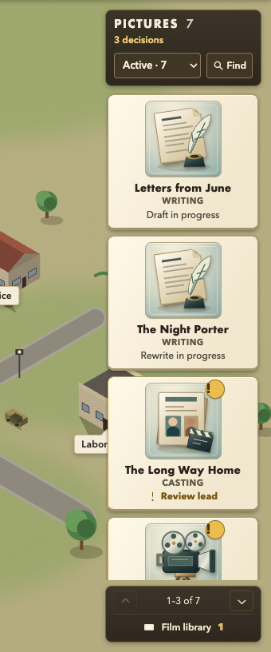

One filmmaking object. One current stage.
Right rail only · same 1440 × 900 viewport, fixed lot, seven active pictures and one library record.
Both crops are 340 × 816 at 1:1 CSS-pixel scale. Only the right-card proportions change.
01 · Recommended hybrid
78 px stage illustration beside the title.
Six complete active cards at once; persistent
status words preserve quick studio tracking.

02 · Closer to original
96 px stage illustration above the title.
Narrower floating objects leave more lot visible;
fewer complete pictures fit before scrolling.

Recommendation: use the hybrid. Keep the changing stage image from Lionhead’s language and readable titles from Backlot. Remove the repeated five-icon phase row and permanent category sections. This comparison does not reproduce Lionhead assets, progress bars or mechanics.
Click through the hybrid · Try the closer comparison · Source → Backlot → proposed